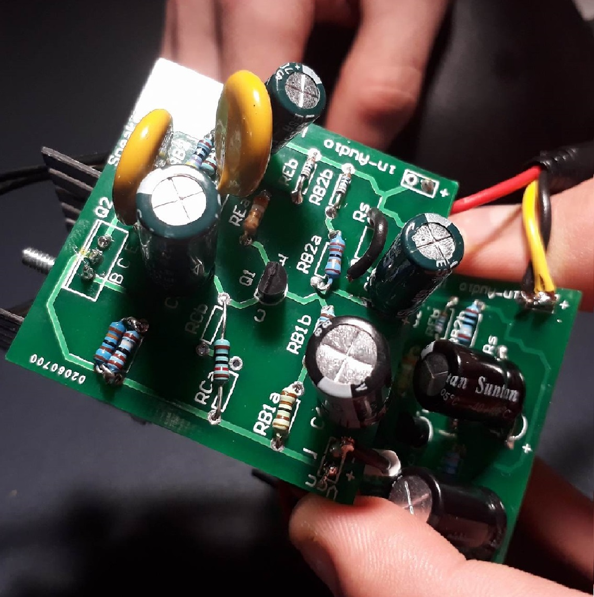

Amplifer Project
Description
This has been a fun personal project co-built with my friend Connor, its a single transistor semi common emitter amplifer with a class A output stage. Pictured above is the circuit I designed and a few more photos below, we named the project the ss Vic-Hymen. Future improvements i would like to make are a casscading design with an A-B output stage, or a discreate diffrential pair input stage utalising shared silicon substrate matched transistor packages. As well as a tutorial linked to how to design transistor amplifers they are elegant and beautifull in there simplicity.
